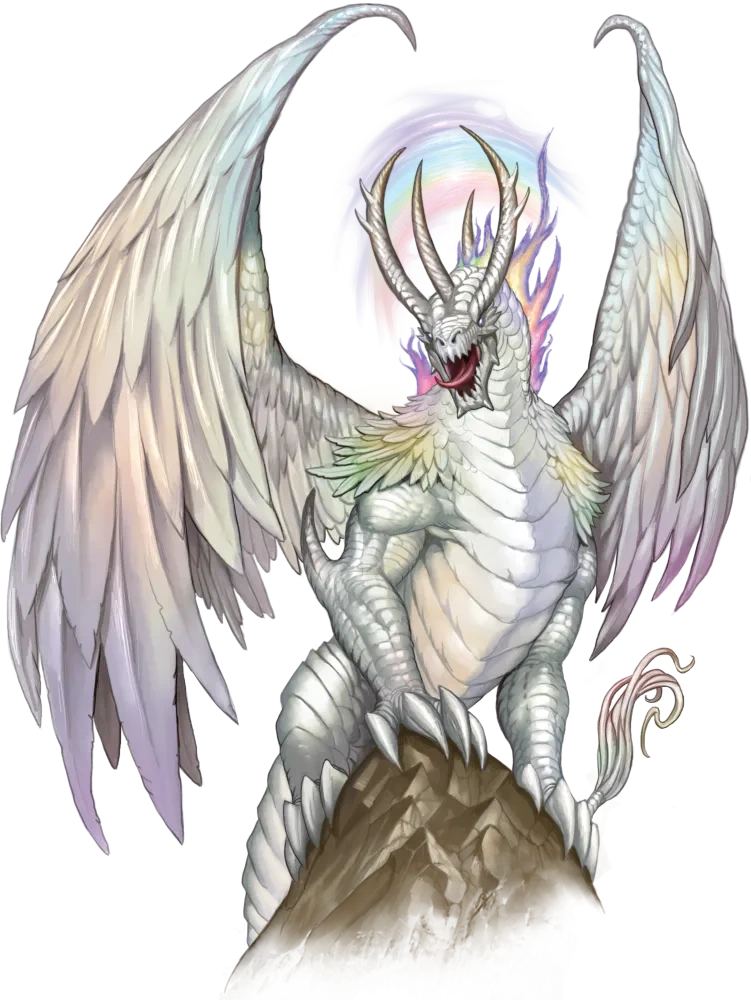

各年龄段数据卡
天角龙是所有巨龙中最为仁善的血统之一。它们心灵与精神纯净无瑕，品行高洁而心地善良，乐于向身陷困顿者施以援手、提供庇护――只要对方的诉求值得成全，且内心未受罪孽或悔恨所累。尽管天性向善，天角龙却与其他任何巨龙一样高傲，对自身的正义、优雅与美丽充满自信。它们绝不容许自己的名号或声誉受到玷污与诽谤，也无法忍受他人质疑自己的动机或美德。一条受到侮辱或威胁的天角龙，其可怕程度丝毫不亚于那些生性更为暴烈的同族。 天角龙体态修长流丽，长着骏马般的面庞与鬃毛，尾尖也生有一簇毛发。它们的鳞片通常呈象牙色、纯白色或乳白色――不过粉红、淡蓝、浅紫与鹅黄等柔和色调也并非闻所未闻――背生羽翼，额头正中央则长有一根虹彩流转的螺旋独角，与独角兽的角颇为相似。这根龙角是天角龙导引魔力的媒介：每当天角龙施展法术时，龙角便会绽放出绚烂夺目的七彩霞光，而且它的吐息武器也是从角尖而非口中释放。即便从天角龙躯体上斩落，这根角依然保有神奇的魔力特性，因而令不择手段的施法者与炼金术士垂涎三尺。然而，敢为了龙角去猎杀天角龙的人寥寥无几，因此天角龙角的获取与买卖主要掌握在屠龙者及其爪牙手中。对于年轻的天角龙以及那些选择举行永恒之光仪式的天角龙而言，龙角黑市交易是尤为严峻的威胁。 天角龙栖居于田园诗般未受玷污的荒野净土之中，例如野花遍地的辽阔草甸、幽静林苑、澄澈湖泊或温润怡人的温泉。在当地凡人眼中，天角龙的领地通常被奉为圣境――那是一片受天角龙守护的至美之地，唯有心灵纯净之人方可前往恳求巨龙的援助与指引；也唯有那些确信自己品德高尚、行事端正之人（或是蠢到无以复加的莽夫），才敢踏足其间…… 伊莉迪塞塔伊莉迪塞塔――世人更常尊称她为“伊莉迪塞塔妈妈”――是一条远古天角龙，最广为人知的事迹便是收养任何族裔的孩童，无论其是否“纯净”或“配得上”。伊莉迪塞塔收养的孩子大多是孤儿，不过任何前来寻求她援助与庇护的孩童，或是无人照看而误入她领地的孩子，她也都会一并收留。伊莉迪塞塔一视同仁地抚育和教导所有孩子，教导他们如何度过正直善良的一生。尽管在孩子们年幼时她总是充满耐心与体谅，但一旦他们长大成人，伊莉迪塞塔便不再轻易宽宥他们的过失。最终，对于那些未能坚守她严格理想的养子女，她会赠予足以在广阔世间开启富足新生活的丰厚财宝，将他们送离领地并祝其前程似锦。而那少数始终践行她理想的孩子，往往都会成长为传奇英雄与著名贤者。 天角龙对大多数短寿凡人心怀戒备，认为他们身上透着一股焦躁的急功近利，而这种心态往往会滋生口是心非、贪婪、自私与无端暴力――这些全都是天角龙眼中污浊不洁的恶习。同样，它们也不信任那些怀有宏大野心，或是渴望扩张、占有与索取的人。无论对方外表多么光鲜、言辞多么动人，天角龙都会怀疑大多数寿命短暂的凡人心怀欺诈与歹意。不过，天角龙也并未彻底放弃希望。它们与寿命悠长的生灵相处融洽，包括大多数善良精类、品德高洁的异界存在、侏儒、精灵以及独角兽。它们还对年幼天真者情有独钟――无论是尚未被快节奏生活的残酷与不可信同族所玷污的孩童与纯真之人，还是已从过往错误中汲取教训、懂得放慢脚步安享晚年的长者。它们将孩童与纯真者视作值得珍视的瑰宝，深知这份纯真转瞬即逝――宛如一朵美丽的鲜花，注定要在初冬的第一场寒霜面前枯萎凋零。 天角龙以向恳求援助或指点的人施以援手而自豪，但它们只帮助那些对其报以应有敬意且被其认可值得相助的对象：心灵或精神纯净者、心怀善意者以及乐善好施者。它们的援助通常表现为治疗、庇护、收留或忠告。至于那些生命如朝露般短暂、易受激情驱使而鲁莽冲动的凡人，无论其灵魂纯净与否，天角龙都很少会为了他们而动用武力。大多数天角龙唯有在家园面临存亡威胁或彻底毁灭时才会投身战斗――例如恶魔入侵、敌对巨龙的暴政，或是大军过境时寸草不生的铁蹄侵略。 音乐鉴赏家天角龙自诩能够洞悉所遇之人的心灵与精神是否纯净。尽管它们不为外貌、巧舌如簧的演说或严密的逻辑辩词所动，却偏偏对音乐与诗歌毫无抵抗力；若是有人能唱出动人的歌谣、谱写繁复的交响乐，或是吟诵鼓舞人心的诗篇，天角龙往往会对他们的缺点与过往劣迹网开一面。所幸，这种对音乐家的偏爱终究有限――再动人心魄的咏叹调，也不可能让天角龙忘却自己亲眼目睹该乐手犯下的恶行，更不会令它对真正邪恶的灵魂视而不见。 “冠角女王”莉瑞娜露在传说与童话里，人们唯有怀着敬畏低声传颂“冠角女王”的名号。在父母向子女讲述、代代相传的故事中，强大的天角龙莉瑞娜露会向在密林深处偶遇她、身陷困境的乖孩子赐予祝福与礼物，同时严惩那些心术不正或顽劣不驯之徒。在现实中，普通孩童本就极少能找到冠角女王隐秘的巢穴，这些故事主要还是用来向孩子们传授道德训诫或生活常识。然而，在遍布大地的原始荒野最葱郁幽深之处，确实潜藏着由盘曲树木交织而成、刻满奇异符文的古怪拱门。这些拱门周围常有异事发生；偶尔――尽管极其罕见――会有孩童或其他纯真生灵无意间穿过拱门，误入冠角女王的领地。 想要进入莉瑞娜露的领地本就难如登天，而且通常全凭她一念之间的兴致。但与接下来要面对的考验相比，进门反倒算是最轻松的一步了。无论是专程前来祈求恩典的请愿者，还是无意间闯入的不速之客，冠角女王都会让他们经历一连串严苛揪心的试炼――她会结合可塑形的魔法征兆、重重险阻以及麾下随从，构筑出迫使来访者做出抉择的处境。未能在考验中过关的人很少是因为缺乏机智或才学，因为她设置这些试炼的初衷本就不是用谜题来奖赏急智。恰恰相反，若是有人耍小聪明、试图绕开考验，反而可能招致冠角女王的雷霆震怒。她的试炼真正考验的是决断力、判断力、决心与道德品格。只要在其中任何一场考验里出现哪怕一丝一毫的失格，来访者就会被直接送回原处。若是犯下性质恶劣的过失、企图作弊，或是做出其他令莉瑞娜露觉得失格不端的行径，挑战者便会遭到诅咒或类似效应的惩罚，按她所认定的罪过承受因果循环的惩戒。惩罚的轻重取决于当事人的初衷以及冠角女王当时的心情。例如，若是有人出于对病重姐妹的关切而暗中作弊、试图偷拿灵药，可能会发现此后每当自己再想作弊或行窃时，哪怕戴着手套，手掌也会渗出鲜红的液体。反之，若是满心贪欲的来访者企图靠谎言与巧辩像黄鼠狼一样狡猾脱罪、蒙混攫取成堆财宝，则可能会发现自己被永远变成一只真正的黄鼠狼――暴露出真实的内在本性，就此沦为众多寻访冠角女王却一去不返者中的一员。 企图贿赂莉瑞娜露绝非明智之举，但那些出于敬意或感激向她献礼的人发现，她最钟爱的莫过于珍奇花卉。在她异界巢穴中远离试炼厅堂、鲜有外人踏足的一隅，她辟出了大片草甸，遍植色彩绚烂的奇花异草――即便它们原本习性迥异、花期各不相同，也能在此一同盛放。尽管通往她内心深处温情的那条道路或许铺满了花瓣，但她极易怀疑那些献上新奇花卉的人别有用心；事实上，每当有人眼看就要讨得冠角女王欢心或赢得她的青睐时，恰恰是她疑心最重的时候。或许她过去曾被骗徒与谄媚之辈伤透了心，又或许她天性便是如此多疑。无论原因为何，任何想要讨好她或打动她心弦的人都必须自行承担巨大的风险。高处不胜寒，大抵便是如此。 天角龙的恩惠寻访天角龙以求恩惠的人，最常期盼的要么是借巨龙的天生法术获得净化，要么是从天角龙的宝库中获赐一件宝物。然而，真正得到天角龙恩惠的请愿者在事后回顾一生时往往会意识到，巨龙所赐予的忠告与智慧，远比单纯的财宝更为珍贵、更令自己受用终生。 天角龙冒险者“棱角”卡凯恩漫游记 The Many Journeys of the Alicorn Dragon Adventurer "Prismhorn" Karkane身为声名卓著的学者，向那些协助我的研究，或是提供必要证言、实验数据与文献记录的人致以应有的敬意，既是我的职责，也是我的荣幸。而当初帮助我踏入仙境的协作者之一，便是一位名叫卡凯恩、绰号“棱角”的永光天角龙冒险者。 卡凯恩的诸多冒险事迹足以写满整整一卷巨著，但那并非本文的主旨，因此我只作简述。总而言之，他的绰号源自其龙角与魔法长杖中流转的虹彩能量，而他的冒险足迹早已遍及我们的凡世与精类国度。他将自己在永恒之光仪式后遭遇的种种挫折化作自身力量的方式，正是永光龙无限潜能的绝佳写照。 ――永光贤者卡利赞德雷克斯 |
 天角龙 |